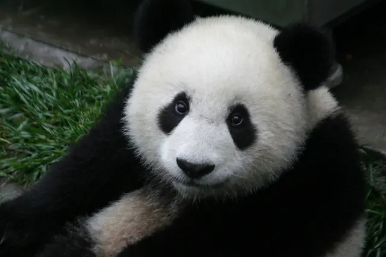

How much do giant pandas sleep?
A giant panda spends roughly half its day or more eating bamboo and most of the rest asleep. Smithsonian's National Zoo puts feeding at 10 to 16 hours a day, broken up by naps of two to four hours, and GPS collar research shows pandas keep this pattern going around the clock rather than sleeping through the night like we do.

Eat, rest, repeat
Bamboo is the reason for almost everything in a giant panda's schedule. An adult can get through a huge amount of it each day, as we explain in how much bamboo does a panda eat, and gathering that much food takes time. Smithsonian's National Zoo says a panda must spend 10 to 16 hours a day foraging and eating, and that the rest of its time is spent mostly sleeping and resting.
So there is no neat "panda bedtime". A wild panda typically eats for a while, then lies down for a nap of two to four hours, sprawled or curled on its side, back or belly. Then it gets up and eats again. In summer, the Smithsonian notes, rests can stretch to six hours or more.
Field researchers have even used droppings to measure naps. Because a panda keeps passing bamboo while it rests, a short rest of under two hours usually leaves five to ten droppings at the spot, while a rest of more than two hours often leaves 11 to 25. Counting them tells scientists roughly how long a panda lay there.
What GPS collars revealed
For a long time, giant pandas were described as crepuscular, meaning most active around dawn and dusk. A 2015 study in the Journal of Mammalogy by Jindong Zhang, Vanessa Hull and colleagues tested that idea with modern tools. They fitted GPS collars carrying motion sensors to wild giant pandas in Wolong Nature Reserve in Sichuan, China, and also to a captive panda so they could check what the collar readings looked like for known behaviour.
The result surprised people. Most of the wild pandas were not crepuscular. Instead they showed three activity peaks: one in the morning, one in the afternoon and one around midnight. In other words, pandas slot their naps between feeding bouts across the full 24 hours.
The team also found that activity changes through the year. It peaked in June, dipped in August and September, then rose again from November to March. Pandas were also more active when there was more sunshine, in every season and especially when it was cold. The authors noted this link to weather raises the possibility that climate change could alter panda behaviour.
Why so much rest? Saving energy on a poor diet
Giant pandas belong to the order Carnivora and still have a meat eater's short gut, which is a poor fit for bamboo (see why pandas eat bamboo if they are carnivores). They make up for it partly by spending very little energy.
A 2015 study in Science by Yonggang Nie and colleagues measured daily energy expenditure in five captive and three wild pandas. On average it was only 37.7 percent of the value predicted for a mammal of their size, and 45 percent for the wild pandas alone. That is extraordinarily low. The researchers linked it to smaller vital organs, low physical activity and low levels of thyroid hormones, which help set the body's metabolic rate.
The Wolong activity study points the same way. Its authors suggest that pandas live on tight energy budgets because of their low nutrient diet, and that they adjust how long and how hard they are active from season to season. Long rests between meals are part of that strategy, not laziness.
Moving with the bamboo shoots
Pandas do not spend every month in the same place either. A 2018 study in Environmental Science and Pollution Research by Mingchun Zhang and colleagues combined field surveys with GPS collar tracking to follow how pandas respond to new bamboo shoots in spring. Shoots of the bamboo Fargesia robusta reach a good height for eating later at higher elevations, and the pandas followed them, starting at the lower end of the bamboo's range and moving gradually uphill until the shooting season ended. This kind of seasonal movement helps explain why activity rises and falls over the year.
No winter sleep
Unlike many bears, giant pandas do not hibernate. Their bamboo is available all year, and the 2015 Wolong study found that activity actually climbs through the cold months from November to March. We cover this in more detail in do pandas hibernate.
The short answer
Giant pandas sleep and rest for most of the hours they are not eating, often 8 hours or more in total, split into naps of two to four hours. They are active in the morning, afternoon and around midnight, and their heavy resting is a clever way to live on a food that gives them very little energy. For more on how they live, see our giant panda guide and panda behavior pages.
Frequently asked questions
How many hours a day does a giant panda sleep?
There is no single precise figure, but Smithsonian's National Zoo says a panda spends 10 to 16 hours a day foraging and eating, and the rest of its time mostly sleeping and resting. That leaves roughly 8 to 14 hours for rest.
How long is a giant panda nap?
In the wild, giant pandas usually nap between feedings for two to four hours at a time, according to Smithsonian's National Zoo. Rests can stretch to six hours or more in summer.
Are giant pandas nocturnal?
No. A GPS collar study in Wolong Nature Reserve by Zhang and colleagues (2015) found most wild pandas had three activity peaks: in the morning, in the afternoon and around midnight. They are active and resting in bouts across the whole day and night.
Why do giant pandas sleep so much?
Bamboo is low in nutrients, so pandas save energy. Nie and colleagues (2015) measured daily energy use in captive and wild pandas at only about 38 percent of what a mammal of their size would be expected to use, helped by low physical activity and low thyroid hormone levels.
Do giant pandas hibernate?
No. Unlike many bears, giant pandas stay active all winter, and the 2015 Wolong study actually found activity rising again from November to March.
Sources
- Zhang, J., Hull, V., Huang, J., Zhou, S., Xu, W., Yang, H. et al. (2015), Activity patterns of the giant panda (Ailuropoda melanoleuca), Journal of Mammalogy 96(6): 1116 to 1127. DOI 10.1093/jmammal/gyv118
- Nie et al. (2015), Exceptionally low daily energy expenditure in the bamboo eating giant panda, Science
- Zhang, M., Zhang, Z., Li, Z., Hong, M., Zhou, X., Zhou, S. et al. (2018), Giant panda foraging and movement patterns in response to bamboo shoot growth, Environmental Science and Pollution Research 25(9): 8636 to 8643. DOI 10.1007/s11356-017-0919-9
- Smithsonian's National Zoo and Conservation Biology Institute: Giant panda
Cite this page
APA
PandasWise. (2026, October 26). How much do giant pandas sleep? https://pandaswise.com/blog/how-much-do-giant-pandas-sleep.html
MLA
"How much do giant pandas sleep?" PandasWise, 26 Oct. 2026, https://pandaswise.com/blog/how-much-do-giant-pandas-sleep.html.
Chicago
PandasWise. "How much do giant pandas sleep?" PandasWise. October 26, 2026. https://pandaswise.com/blog/how-much-do-giant-pandas-sleep.html.